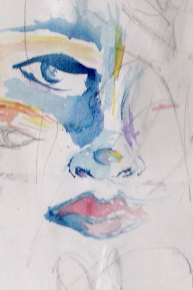
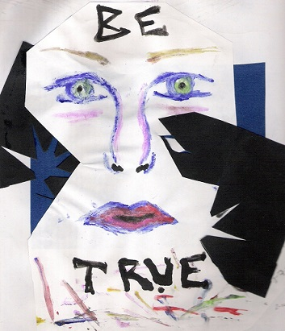
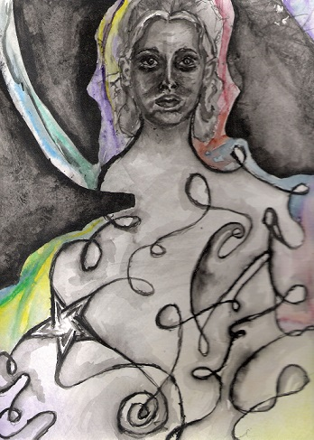
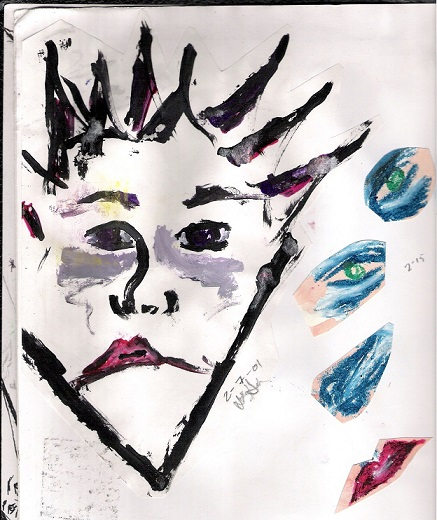
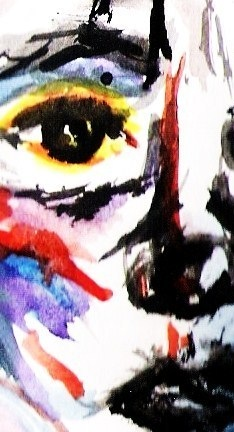
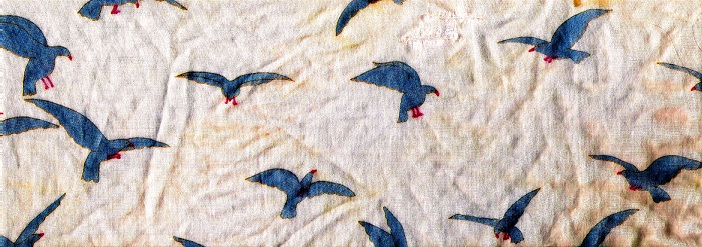

A coldness crept through the circle of girls, as scissors in the hand slide to mend a too-tight hem, or as if someone had whispered, gesturing, “this is not the end.” A few had the idea, that there would be a split, but it was by no means common knowledge. It was a secret love note addressed to another, each girl’s silent fear.
They stood huddled as in winter, too close for early spring, eating hastily-prepared lunches, near the concrete blocks of the school’s mall. Her eyes were looking too near, too near. She laughed in time with the others. They were all animated, now, to keep off the chill; now, to portray an illusion.

Not for the lack but for the abundance, she had begun to be skeptical of sensations which were barely felt or heard rather than those which were directly seen, touched. They continued to stand tight in a ring for weeks after the general premonition. The feelings, the whispers began to catch like ragged toenails on threadbare socks.
She tried to resist the shock, the truth behind the pull, content in her position, knowing more the coolness, the prodding, the growing distance between the others, herself.
But she and the others became made-up. Boys and more established girls frequently broke up the ring.The fights were not innocent but bloodless; eyes, tongues began to roll with indignation. Girls went missing, only to be found beside other concrete blocks, in other circles: there she stood, coolly performing on the far side of the square concrete lunch area.
And then the bell shrilled for the last lunch of the last day of the last year of school. The girls were scattered. She was among new friends, new enemies, when the metallic coldness cut through the clamor to the other side of all that had held them there. Her ripped bag slung carefully over her shoulder, she made her way alone through the many faces of the hallway and thought, maybe. . . maybe things were on the mend.
An evening in my house in a neighborhood not far from possibility. I sit on the floor, up close, watching a rerun of Lawrence Welk on the TV. I hold up five thin fingers counting my age, sharpening the soft-colored light from the screen, then bang! I am on it—I am on the TV! My sister says, She’s me, not you, and I say, Oh, but that’s me in the background at least.
I’m in middle school, and the TV talks to me from four to six every day I don’t have soccer. I befriend Oprah and then the Queen of Nice in two separate dreams. Does it count when it’s in your mind that you’ve done something—that you’ve actually done it?

The magazines do flips at the doctor’s office. Matching paintings schmooze on the wall. Even if there is no sign, everyone knows, Please leave the magazines for others to enjoy. Some rebel’s inked up the personality quiz in mine. The psychiatrist guides me to her office. She asks what I expected a psychiatrist to look like. I shrug. She’s kind. I’m somewhere else. I receive no plastic trinkets for being good but leave with a slip of paper and two black books on darkness and light. She can’t be sure, but I will devour the books—can’t be sure, but I will return them. My mom waits in the parking lot. She smiles. I gloom, half-asleep. I hold no expectations, only seventeen and a half years and lackluster eyes.
I’m caught in a web of fictions. I can’t be sure that I will wring understanding from this pain. In the hospital, a romance plays. For a few hours I believe I am Kate Winslet in Titanic and, god, it’s exhilarating to be in love and awful every time we sink.
Hard edges were everywhere but forms eluded sight. The smallest shard of light, splitting a snare, pierced the skin of the darkness like a hook through the cheek of a well hidden trout. There was no way to avoid a sharp light like that. So space lit up in lines at the frayed edges of my vision, but I wandered still, as though in a trance: not seeing, not knowing, merely tripping and falling over bits and pieces of fishing supplies I could not name. I was trapped. In a child’s plastic tackle box.
You’ll want to know how I began to see, and I’ll agree, it was impossible. I couldn’t have watched the creature (I call him Heart) stand there gazing steadily at the girl who had fishhooks for eyes. Yet he wore the kindest, most frightened and courageous look she’d ever seen, will ever see, especially if she could, or will ever be able to see clearly. I can’t tell much, I not knowing the future, not even knowing the past, as time is like a ribbon endlessly fraying at its never-ending ends. I could tell she, too, was fearful, had only a shadow of the creature’s courage. His strength tied her to him like a knot for a time.
To escape was like stepping round thickets of barbed wire, barefoot on burrs, barefoot crushing those dandelion seeds that must be crushed on the way. But as they traveled over line, hooks, and lures, his eyes became hands lifting her upon the seat of a bicycle built for a miniature girl, spinning, spinning, her bare feet spinning.
I saw only darkness and visions of the past fraying into blank, but I pedaled clear of the plastic tackle box in which I was trapped. I stopped, tried to look, squinting into the absences—began to imagine I saw reflection.
I was a girl with fishhooks for eyes.
All the boxes I’d ever been in, with their extendable shelves, opened, and all the girls with fishhooks for eyes climbed out to meet me in the center of the large garage. With rollerblades, we became ice princesses gliding upon the cold, smooth concrete. It was only when we stopped pretending that we realized our eyes had arrived. The hooks, gone. Then all the other girls disappeared; each waved a little wave, one by one. If they stepped into corners or poofed into thin air, I couldn’t tell. The creature? He had slipped away unnoticed, while some new and unpreventable world beckoned to me in the cracks of light fraying from beneath the heavy vertical-rolling door.


I’m slipping off my ship.
It bathes its parts. Trips
on the sea, then sinks—
Chasm. For fate I fall
fast into the sun, felling
logic in my wake—
Breath. Heart swims near.
Fins. Whale ooh’s. The water
chills while I wail—
Arrive the nurses, nine. All
in time to my rhymes. Sunny.
Strap me sweetly down—
Journey. Now, to never.
Has my body gone blue?
Sky-blue to sky-black?—
Burnt. The doctor’s here.
Curtsy and bow. Mine
cutesy, from sarcasm now—
I grab at my heart. Heave
to hurl it to a plank. I will
find relief. First, grieve—
The doctor, after all, has
warm eyes. They snap
snap if he isn’t looking—
Cling. The plank holds
my weight. Interrogate:
To plunge? Or to wait—
Nine nurses nurse
my numbs. Gnaw at nevers.
Away, dangers hum.
Wretched rakes the day room carpet for dropped pills while Righteous feeds me intravenously.
Rape, Girl, next door, screams in her sleep all night. We’ve all heard Violation lives on this ward. Radical tears at my hair to get to the roots, then Respectful calls me Col. Colander Brain. There’s a lot in there,” he says in wonder, “but it all dribbles out so fast.”
Everybody is tired of Eager, but I secretly love him, his reckless vision. Easy always tells me I think too hard. “Let up, let down a little, let us braid your luscious, gold hair.”
Try pulls violently on my arms, splashes me with icy water. She looks like my mother, but cold.
Condescending settles in the nurse’s eye. She speaks to me slowly, as if I don’t see Bitterness draw up and down the other eyelid like a shade. And Clever—he pokes fun at Charity’s glances, says she’s a washed-up hero, says she’s thin as a match but forgets she’s as potent.

Hurry wants to get me out. Out! Out! Out! I can’t blame her, because Humiliate harangues the patients, and we mostly listen to Grandeur, Despair and Terror.
Everybody, a large man, travels in a circle round the room during physical therapy. I watch him and wonder where I am. I discover I am part of him, but he is not part of me—at least— not that I can see.
Deliberation rarely speaks. She watches us, shifts positions purposefully, crinkles her brow. I begin to think she is right, though she hasn’t yet made up her mind.
Seasons pass and we all rake the world for scraps of Truth, but when most of my imaginings are tucked into their individual beds in their divisible rooms, my Wretched rakes and rakes, sees only the floor, never quite finds what she’s looking for.
The screen around the porch sieves the half-light into cloying hands. Fingers of the other patients’ cigarette smoke lace with cicada’s song to scrape round your eyes your breasts your waist your toes.
Your prayers scream into an assumed emptiness, into a place where you weren’t aware a creature lives.
You have never allowed yourself to believe in any place so real.
You walk inside, slipping through the grip of the darkened dusk. Behind glass, the nurse prepares the pills. As she places each one in an identical plastic cup, you imagine the plastic clicks. Each click is a knock on the door of your skull.
The creature speaks, a plural voice as audible as your pulse.
We offer you a climbing rope.
The rope, you have always possessed.
You will climb and
you will climb. You will not stop climbing,
but you will never reach its end.
From it you will see such sights, painful
and beautiful,
as you have never yet seen.
The creature called Heart wears skin scarred, topographical. Nineteen eyes drip over its body—one for each year of your life. They are like drops of wet sand, squeezed fresh from tiny fists.
This moment is a knot
on the rope,
the rope
on which you will climb
to another moment.
One of its pupils sucks in your world. You wince—the day room’s so bright. The light disappears when you look straight at its reflection in the vacuum of that one eye.
You may fall,
falling.
You may grasp another rope.
Remember, we, too, are in the dark.
It is difficult to see.
Some of the creature’s other eyes glimmer. Many sink, forming cratered, dead volcanoes. You touch your own eyelids, tremble.
The nurse, approaching, missteps and drops the cup of pills. The anti-’s rattle, then roll along the floor.
You were looking for an answer. We give you no answer. This rope may lead you to another dream.
You can cry out. You can ease your grip, breathe. You can trust the help as they pull you up to the nearest moment, even after the creature wades away into the deep brown eyes of a tech who has been saying something quietly.
She rises. The moment passes. The nurse arrives. You climb
and you climb to the next.
I sit on one of the benches in the center of the park, waiting for the rock pigeons to fly. Every day, they eat the leftovers from the lunchtime picnic rush. Every day—as long as I’ve been around here—a couple weeks, give or take. But when there’s nowhere to go, nothing to do, each hour measures from end to end of the sky.
The reason I don’t leave before the pigeons is impeccable politeness. My mother always said we should never leave the table until everyone finished. But that’d be a joke— I’m still recovering my laugh.
Recovering—what it’s called, what I’m doing. In and out, in and out of the hospital, what have I left to cover? Thin as bird legs—following the weather, following my whim. Instinct. Whichever wind’s the strongest.
Some days I can’t see more than the bead-like eyes, robotic movements. But now, at two fifteen on the dot, the earliest bird leaves—to light on a tree behind me. I lean my head past the back of the bench to see its silhouette flapping under deep blue. I spread my arms across the bench. For a second, I’m sailing too.
A street musician I met yesterday looked past me, said, we’re all under this sky like we’re caught in water. Said, we’re under, looking up, but seem to be stuck here, never seeing past the surface till we break it. I imagined past the sky in the shape of a bird, blue broken by gray and white.
I’m staying with my uncle for now, sleeping on the couch of his small apartment. A change of scenery for the summer, my therapist advised. My uncle keeps to himself, doesn’t know where I go each day, or why. Honestly, I’m not sure I know all the reasons. But I take my pen and notebook, water, some food, and walk around the city. I lunch in this park, watching pigeons peck then take flight.
It’s hot. I’m left with the pigeons, an old woman painting the statue of a saint with stone birds on its shoulders, and two grade school boys, punching each other playfully on the opposite bench. No one else just sits, waits for birds. A woman of twenty in a t-shirt, skirt and walking sandals wastes the middle of her summer day in a small, hot, city park, waiting for birds. Yes, waiting for the birds, before I can leave—before I want to leave.
One day I’ll leave, never come back like a pigeon to the park.
You are recovering, I tell myself. This fogged up lethargy called a body. My laugh.
One of the boys stomps his foot to startle the remaining birds.

--